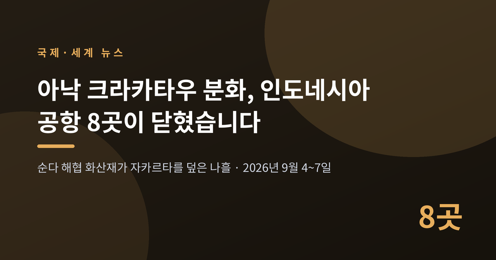
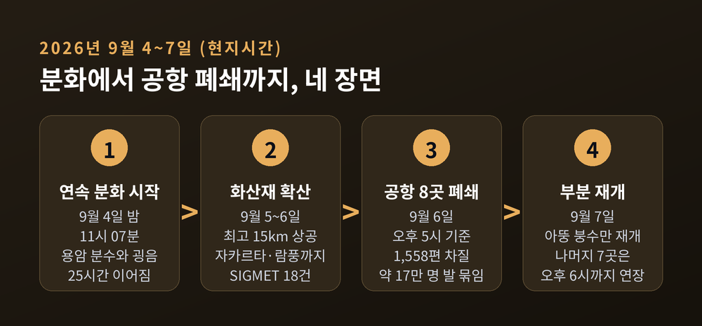
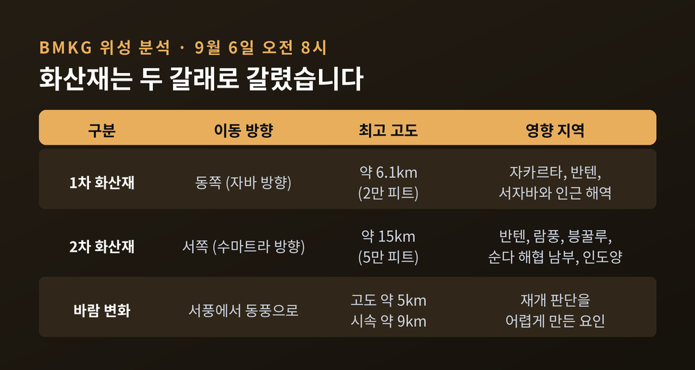
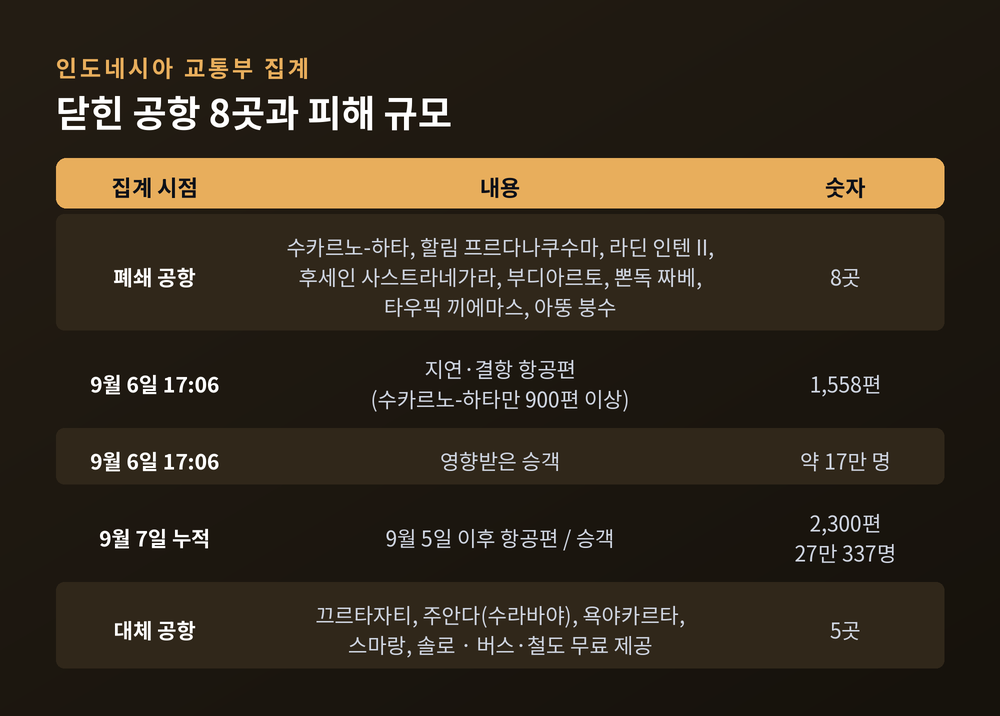
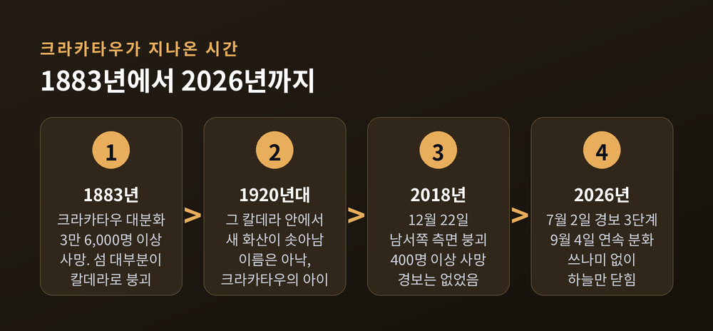
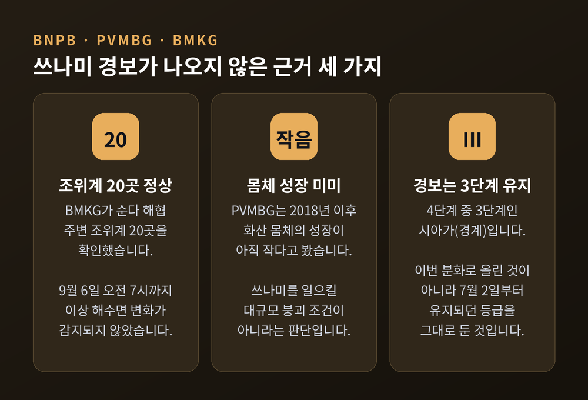
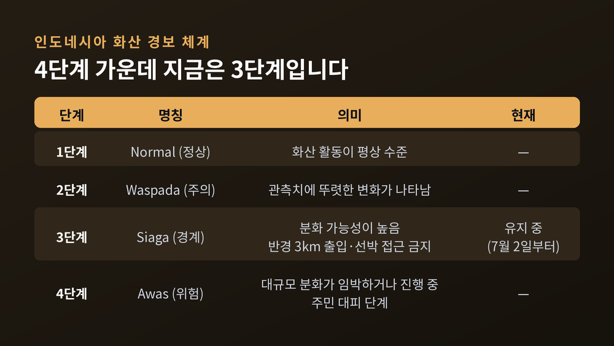

아낙 크라카타우 화산 분화로 인도네시아 공항 8곳이 닫힌 이유

이번 글에서는 2026년 9월 인도네시아 순다 해협에서 일어난 아낙 크라카타우 화산 분화를 정리해 보겠습니다. 화산 하나가 어떻게 수도권 공항을 멈춰 세웠는지, 그리고 왜 쓰나미 경보는 나오지 않았는지를 순서대로 살펴보겠습니다.
세 줄 요약
- 9월 4일 밤 11시 7분(현지시각) 아낙 크라카타우가 연속 분화를 시작해 25시간 동안 이어졌습니다. 굉음은 700km 밖에서도 들렸습니다.
- 화산재가 자카르타 수도권과 수마트라 남부를 덮으면서 공항이 최대 8곳까지 문을 닫았습니다. 9월 6일 기준 1,558편이 지연·결항됐고 약 17만 명이 발이 묶였습니다.
- 화산 경보는 4단계 중 3단계를 유지했고, 쓰나미 경보는 발령되지 않았습니다. 다만 반경 3km 해상 접근은 금지됐습니다.
■무슨 일이 있었나 — 금요일 밤에 시작된 25시간
아낙 크라카타우는 자바섬과 수마트라섬 사이 순다 해협에 있는 화산섬입니다. 이름은 '크라카타우의 아이'라는 뜻입니다.
인도네시아 지질청 기록으로는 2026년 9월 4일 금요일 밤 11시 7분(현지시각)부터 연속 분화가 시작됐습니다. 용암 분수가 솟았고, 용암류가 흘렀으며, 작열하는 분출물이 쏟아졌습니다. 굉음은 반복됐습니다.
그 소리는 최대 700km 떨어진 곳에서도 들렸습니다. 서울에서 부산까지의 거리보다 먼 곳입니다.
이 연속 분화는 25시간 동안 이어지다 일요일 자정 직후에 멈췄습니다. 하지만 끝이 아니었습니다. 9월 6일 새벽 3시 53분에 30초짜리 분화가 있었고, 약 세 시간 뒤 16초짜리 분화가 한 차례 더 기록됐습니다.
당국은 이번 활동을 올해 들어 가장 강한 것으로 평가했습니다.

■화산재는 두 갈래로 갈렸습니다
문제는 화산재가 어디로, 얼마나 높이 올라갔느냐였습니다.
인도네시아 기상기후지구물리청(BMKG)이 9월 6일 오전 8시 위성으로 분석한 결과, 화산재 덩어리는 두 개였습니다.
하나는 동쪽으로 움직였습니다. 고도 약 6.1km, 그러니까 2만 피트까지 올라가 자카르타와 반텐, 서자바와 인근 해역을 덮었습니다.
다른 하나는 서쪽으로 갔습니다. 이쪽은 훨씬 높았습니다. 약 15km, 5만 피트 상공까지 치솟아 반텐과 람풍, 븡꿀루, 순다 해협 남부, 그리고 인도양까지 퍼졌습니다.
BMKG는 이 화산재 위험을 알리는 항공용 중요기상정보, 즉 SIGMET을 9월 6일까지 18건 발령했습니다.
바람도 도중에 방향을 바꿨습니다. 교통부는 고도 5km 부근의 바람이 낮 동안 서풍에서 동풍으로 돌아섰고, 시속 약 9km로 이동했다고 밝혔습니다. 이 변덕이 뒤에 이야기할 공항 재개 판단을 어렵게 만들었습니다.

■공항 8곳이 닫히고 1,558편이 멈췄습니다
인도네시아 교통부가 운항을 중단시킨 공항은 최대 8곳이었습니다.
수도권의 관문인 수카르노-하타 국제공항과 자카르타 할림 프르다나쿠수마 공항이 포함됐습니다. 람풍의 라딘 인텐 II 공항, 반둥의 후세인 사스트라네가라 공항도 닫혔습니다. 여기에 쭈룩 부디아르토, 남땅그랑 뽄독 짜베, 쁘시시르 바랏 타우픽 끼에마스, 파가르알람 아뚱 붕수 공항이 더해졌습니다.
주목할 점은 거리입니다. 수카르노-하타는 화산에서 150km 넘게 떨어져 있습니다. 그런데도 화산재가 도달했습니다.
9월 6일 오후 5시 6분 기준으로 교통부는 지연·결항 항공편을 1,558편으로 집계했습니다. 이 중 900편 이상이 수카르노-하타를 오가는 노선이었습니다. 영향을 받은 승객은 약 17만 명이었습니다.
수카르노-하타는 좌석 공급 기준으로 동남아시아에서 두 번째로 붐비는 공항입니다. 이곳이 멈추면 동남아와 호주, 중동을 잇는 국제선과 인도네시아 국내선이 함께 흔들립니다.
당국이 손을 놓고 있었던 것은 아닙니다. 끄르타자티와 수라바야 주안다, 욕야카르타 국제공항, 그리고 스마랑과 솔로 공항이 대체 착륙지로 지정됐습니다. 다른 공항으로 항공편이 옮겨진 승객에게는 버스와 철도를 무료로 제공하겠다고 두디 뿌르와간디 교통부 장관이 밝혔습니다.

■왜 중요한가 — 화산재는 눈에 잘 보이지 않습니다
화산재가 항공에 위험한 이유는 단순합니다.
화산재는 미세한 암석 유리 입자입니다. 제트 엔진 안으로 들어가면 고온에서 녹아 엔진 부품에 들러붙습니다. 시야도 가립니다. 그런데 레이더에는 잘 잡히지 않습니다.
그래서 화산재 앞에서 항공 당국이 택하는 답은 하나뿐입니다. 하늘을 비우는 것입니다.
이번에도 그랬습니다. 9월 7일 월요일, 수카르노-하타에서는 화산재 검사를 네 차례 실시했고 결과는 모두 음성이었습니다. 지상에서 화산재가 검출되지 않았다는 뜻입니다.
그럼에도 당국은 곧바로 공항을 열지 않았습니다. 확실히 하기 위해서였습니다. 바람 방향이 바뀐 것이 신중론의 근거였습니다.
이날 남수마트라 파가르알람의 아뚱 붕수 공항만 오전 9시에 다시 열렸습니다. 나머지 일곱 곳은 오후 6시까지 폐쇄가 연장됐습니다. 재개 시각은 몇 차례에 걸쳐 뒤로 밀렸습니다.
교통부의 9월 7일 누적 집계로는, 9월 5일 이후 영향을 받은 항공편이 2,300편, 승객이 27만 337명으로 늘었습니다.
■한국 노선도 끊겼습니다
이 사태는 한국과도 직접 닿아 있습니다.
9월 6일 인천공항에서 자카르타로 향할 예정이던 직항편은 대한항공, 아시아나항공, 티웨이항공, 가루다인도네시아 네 곳이 모두 결항했습니다. 한-자카르타 항공편이 사실상 끊긴 셈입니다.
대한항공은 9월 5일 인천–자카르타 왕복편을 약 13시간 20분 지연시키며 상황을 지켜봤습니다. 그러나 결국 취소했고, 다음 날 전편도 취소했습니다.
아시아나항공은 자카르타 노선 비정상 운항이 한국시간 9월 7일 밤 11시 59분까지 이어질 것으로 예상한다고 안내했습니다. 티웨이항공은 9월 7일 출발편에 대해 별도 공지를 냈습니다.
항공사들은 수수료 부담을 덜어주는 조치를 내놨습니다. 티웨이항공은 결항이 확정된 편에 대해 환불과 재예약 수수료를 전액 면제하기로 했습니다. 다만 공식 결항 발표 전에 승객이 스스로 취소했다면 이후 결항되더라도 수수료를 내야 합니다. 대한항공과 아시아나항공은 자체 천재지변 규정을 적용해 대체편과 일정 변경을 지원하고 있습니다.
한국 외교부는 9월 6일 해외안전여행 사이트에 공지를 올려 현지 체류 국민에게 각별한 주의를 당부했습니다. 미국 대사관도 같은 날 자연재해 경보를 냈습니다.
■배경 — 1883년과 2018년이 남긴 것
아낙 크라카타우를 이야기하려면 두 개의 연도를 짚어야 합니다.
첫 번째는 1883년입니다. 그해 8월 크라카타우 화산이 기록에 남은 가장 격렬한 분화 중 하나를 일으켰습니다. 3만 6,000명 넘는 사람이 목숨을 잃었고, 섬 대부분이 칼데라로 무너졌습니다.
약 45년 뒤인 1920년대, 그 칼데라 안에서 새 화산이 바다 위로 솟아올랐습니다. 그것이 아낙 크라카타우입니다.
두 번째는 2018년입니다. 그해 12월 22일, 분화 중이던 아낙 크라카타우의 남서쪽 측면이 무너졌습니다. 그 붕괴가 쓰나미를 만들었고, 자바와 수마트라 해안에서 400명 이상이 숨졌습니다.
당시 경보는 울리지 않았습니다. 이유는 구조적이었습니다. 인도네시아의 쓰나미 경보 체계가 지진으로 생기는 쓰나미를 전제로 설계돼 있었기 때문입니다. 산사태형 붕괴는 강한 단주기 지진파를 만들지 않아 감지 자체가 되지 않았습니다.
이 붕괴로 화산의 최고점은 338m에서 약 110m로 낮아졌습니다. 2019년 초 측정에서 157m로 다시 자라 있었습니다.
예전에는 이런 화산 활동이 사후 보도로만 알려졌습니다. 지금은 경보 등급과 조위계 데이터가 실시간으로 공개됩니다. 그 차이가 이번 대응에서 드러났습니다.

■쓰나미 경보는 왜 나오지 않았나
2018년의 기억 때문에, 이번에도 가장 먼저 나온 질문은 쓰나미였습니다.
인도네시아 국가재난관리청(BNPB)은 임박한 쓰나미 위험이 없다고 밝혔습니다. 근거는 세 가지였습니다.
첫째, BMKG가 순다 해협 주변 조위계 20곳을 확인한 결과 9월 6일 오전 7시까지 이상 해수면 변화가 감지되지 않았습니다.
둘째, 화산지질재해완화센터(PVMBG)는 2018년 이후 아낙 크라카타우의 몸체 성장이 아직 상대적으로 작다고 평가했습니다. 쓰나미를 일으킬 만한 대규모 붕괴가 일어날 조건이 아니라는 판단입니다.
셋째, 화산 경보는 4단계 중 3단계인 '시아가(경계)'에 머물렀습니다. 이 등급은 이번 분화 때 올라간 것이 아니라 이미 7월 2일부터 유지되고 있었습니다.
그렇다고 통제가 없었던 것은 아닙니다. PVMBG는 화산 활동 중심에서 반경 3km 이내 출입을 전면 금지했습니다. 항만 당국은 선박에 이 구역 접근을 금지하고 항행 안전에 주의할 것을 당부했습니다. 화쇄류와 용암, 작열 분출물, 강한 화산재 강하가 예상 위험으로 제시됐습니다.

■주민들의 하루는 어땠나
공항 이야기에 가려지기 쉽지만, 화산재가 내린 지역의 일상도 멈췄습니다.
자카르타시는 월요일 학교 수업을 온라인으로 전환했습니다. 기간은 밝히지 않았습니다. 정부도 화산재 영향 지역 학교의 온라인 전환을 승인했습니다.
반텐 주지사와 반텐·람풍의 재난기관은 화산재가 내린 지역 주민에게 외출 시 마스크 착용을 요청했습니다. 눈 보호구를 쓰고, 야외 활동을 줄이고, 물을 받아두는 곳을 덮으라는 권고도 함께 나왔습니다. 시야가 나빠지니 운전에 주의하라는 당부도 있었습니다.
어업도 중단됐습니다.
BNPB는 인공강우를 실시하겠다고 밝혔습니다. 비를 내리게 해 화산재를 씻어내겠다는 것입니다. 수하르얀토 BNPB 청장은 비가 충분히 내리면 이틀째 일상을 방해해 온 화산재가 빠르게 씻겨 내려갈 것이라는 취지로 설명했습니다.
이번 분화로 인한 사망·부상 보도는 확인되지 않았습니다.
■쟁점 — 숫자가 엇갈리는 이유
이 사안을 찾아보면 숫자가 제각각입니다. 17만 명, 27만 명, 15만 명이 함께 나옵니다.
혼선이 아니라 집계 시점과 범위의 차이입니다.
17만 명은 9월 6일 오후 5시 시점의 교통부 집계입니다. 지연·결항 1,558편을 기준으로 한 숫자입니다.
27만 337명은 9월 7일 시점의 누적 집계입니다. 9월 5일 이후 폐쇄와 노선 조정까지 포함해 2,300편을 기준으로 합니다.
15만 명은 사태 초기 한국 언론이 전한 숫자로, 수카르노-하타 단독의 운항 차질을 기준으로 삼은 것입니다.
폐쇄 공항 수도 마찬가지입니다. 처음에는 6곳으로 보도됐다가 8곳까지 늘었고, 9월 7일 한 곳이 재개되면서 7곳이 됐습니다.
재난 보도에서 숫자가 흔들리는 것은 흔한 일입니다. 중요한 것은 어느 숫자가 맞느냐가 아니라, 그 숫자가 언제 어디까지를 센 것이냐입니다.

■앞으로의 전망
세 가지를 지켜볼 만합니다.
첫째, 추가 분화 가능성입니다. 인도네시아 지질청은 9월 7일 "앞으로도 추가 분화 가능성이 높다"고 경고했습니다. 경보는 3단계에 머물러 있지만 활동이 끝났다고 보기는 이릅니다.
둘째, 공항 재개의 속도입니다. 지상 화산재 검사가 음성으로 나와도 상공의 바람이 방향을 바꾸면 판단이 뒤집힐 수 있습니다. 실제로 재개 시각은 여러 차례 미뤄졌습니다. 안전을 우선하는 판단과 승객·항공사의 손실 사이에서 당국은 계속 저울질을 해야 합니다.
셋째, 경제적 파장입니다. 자카르타는 관광 수요만이 아니라 기업 출장 수요가 큰 도시입니다. 인도네시아 국내선 환승의 핵심 관문이기도 합니다. 운항 제한이 길어지면 항공권 취소를 넘어 숙박과 교통, 현지 비즈니스 일정으로 피해가 번질 수 있다는 관측이 나옵니다. 이번 사태가 역내 여행 성수기와 겹쳤다는 점도 충격을 키웠습니다.
다만 아직 확인되지 않은 것도 많습니다. 구체적인 경제 손실 규모를 제시한 신뢰할 만한 추산은 나오지 않았습니다. 분화가 언제 완전히 잦아들지도 알 수 없습니다.
정리하면 이렇습니다.
이번 아낙 크라카타우 분화는 인명 피해가 보고되지 않은 재난이었습니다. 대신 27만 명의 일정과 2,300편의 항공편이 멈췄습니다. 화산은 사람을 직접 해치지 않고도 한 나라의 하늘을 닫을 수 있다는 사실을 보여준 셈입니다.
그리고 2018년과 달리, 이번에는 경보가 먼저 울렸습니다. 7월에 등급이 올라갔고, 9월에 조위계 20곳의 데이터가 공개됐으며, 반경 3km가 미리 비워졌습니다.
— 재난을 막을 수 없다면, 남는 일은 미리 아는 것뿐입니다.
발이 묶인 시간이 아깝지 않았느냐고 물으신다면, 저는 그 시간이 누군가를 지켜낸 대가였다고 답하고 싶습니다.
■참고한 주요 보도
- Al Jazeera (AFP·Reuters 종합) 「Thousands stranded as Anak Krakatau eruption shutters Indonesian airports」 (2026-09-06)
- The Watchers 「Strong eruption at Anak Krakatau closes 8 airports, disrupts 1 558 flights in Indonesia」 (2026-09-06) — 인도네시아 교통부·BMKG·ESDM 지질청 1차 자료 인용
- The Watchers 「High-level eruption at Anak Krakatau ejects ash over 15 km a.s.l., Indonesia」 (2026-09-04)
- Malay Mail (Reuters) 「Indonesia weighs reopening airports as Anak Krakatau ash conditions improve」 (2026-09-07)
- Al Arabiya English (Reuters) 「Seven Indonesian airports remain shut due to volcanic ash from Anak Krakatau」 (2026-09-07)
- UPI 「Seven Indonesian airports remain closed after Anak Krakatau eruption」 (2026-09-07)
- CNBC 「Volcano eruption disrupts hundreds of flights at Southeast Asia's second-busiest airport」 (2026-09-07)
- Tempo English 「Will Mount Anak Krakatau Eruption Trigger Tsunamis? BNPB Assures It Won't」 (2026-09-06)
- Tempo English 「Mount Anak Krakatau Erupts Overnight, Spews Lava Fountains」 (2026-09-05)
- 서울경제 「Volcanic Ash Halts Korea-Jakarta Flights, Delays Stretch 13 Hours」 (2026-09-07)
- U.S. Embassy Jakarta 「Natural Disaster Alert: Mt. Anak Krakatau Eruption September 6, 2026」 (2026-09-06)
- PBS NewsHour (AP) 「Volcanic island in Indonesia erupts, forcing the cancellation of hundreds of flights」 (2026-09-06)
- 1883년·2018년 배경: Science Advances (2020), NHESS/Copernicus (2020)
- 전체 출처 목록과 발행일, 수치가 엇갈리는 지점의 정리는 같은 폴더의
research.md에 담겨 있습니다.